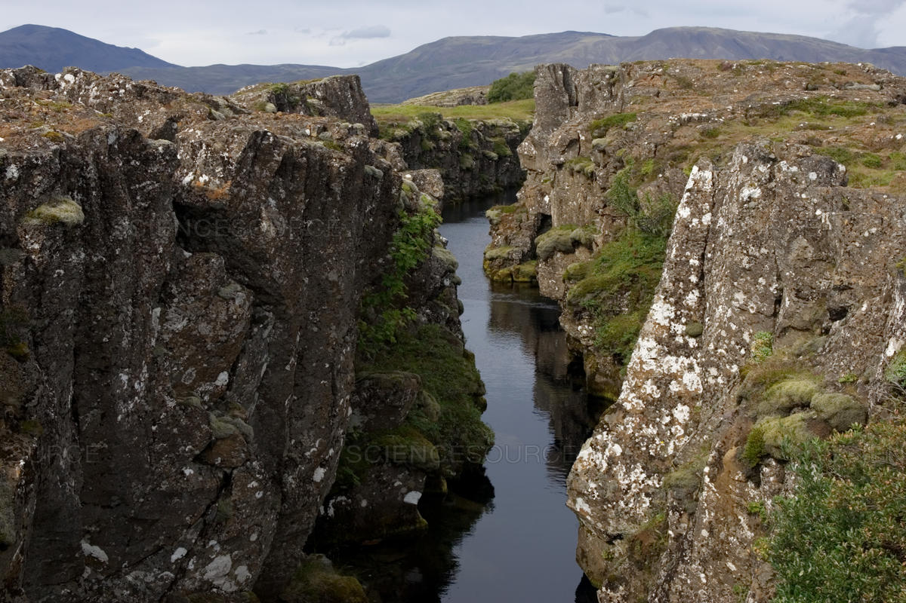
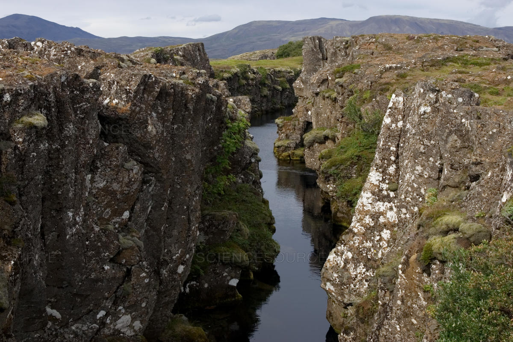

Imágenes
| Reikiavik |  |
| Rift de Thingvellir |  |
Islandia es un país de Europa, parte del grupo de países nórdicos. Se situa en el océano atlántico y cuenta con varios atractivos turísticos.
A pesar de su poca población (364.134 habitantes) y del clima frío que no facilita la realización de múltiples actividades económicas, su nivel de desarrollo humano es alto y cuenta con un conjunto de características que lo definen como un país feliz
| Capital | Reikiavik |
| Número de habitantes | 364.134 |
| Superficie (km2) | 103.000 |
| Idioma oficial | Islandés |
| Moneda | Corona Islandesa (ISK, kr) |
| Huso horario | GMT (UTC+0) |
| Fechad de independencia | 11 de Diciembre de 1918 |
| Reikiavik | |
| Rift de Thingvellir |  |